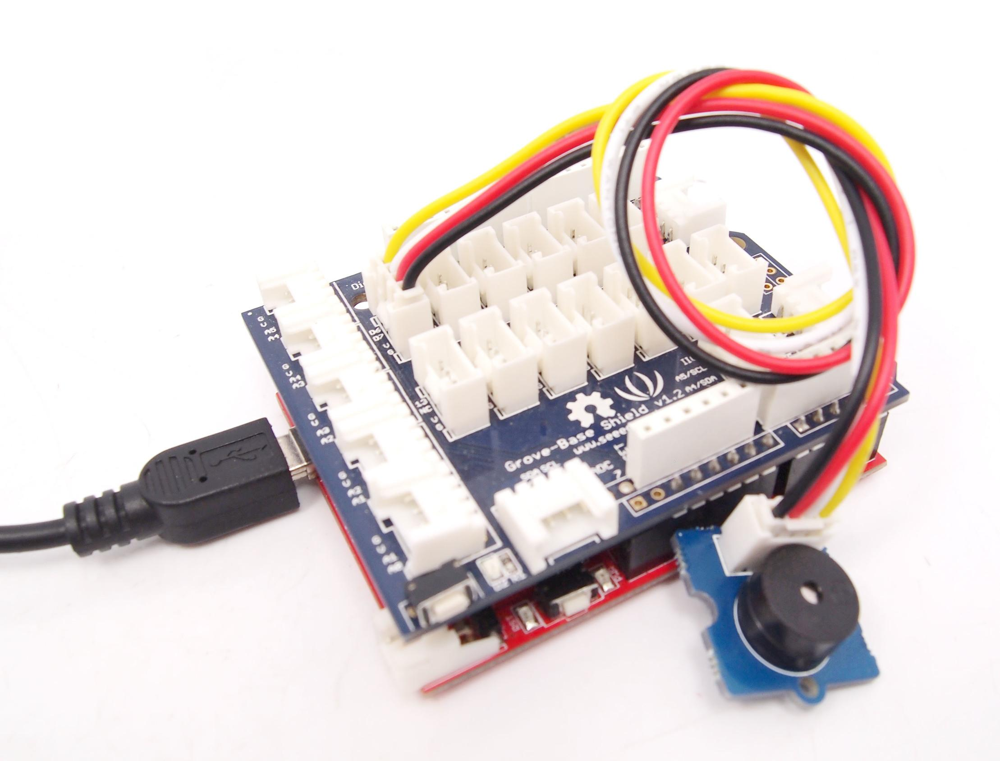

Project Four – Noise Maker
The purpose of this sketch is to use the piezo buzzer to make a beeping noise.
The potentiometer is used again as an analog input to vary the delay time. As you adjust the potentiometer, the speed of the beeps will change.
The picture is incorrect - you need to Connect the Potentiometer to the Analog A0/A1 input jack, like it was in Project 3.
The Potentiometer produces an analog voltage on its D1 output, which is connected to Arduino A0 analog input on the A0/A1 input jack.
Connect the Buzzer to the D6/D7 Digital I/O Jack. The sketch uses Arduino Pin D6 to send power to the Buzzer on its D1 input.

Now upload the following Arduino sketch:
// Project Four - Noise maker
//
void setup()
{
pinMode(6, OUTPUT);
}
void loop()
{
digitalWrite(6, HIGH);
delay(analogRead(0));
digitalWrite(6, LOW);
delay(analogRead(0));
}
As you can see, the piezo can be used as another form of digital output. When using this Grove unit, don't forget to set the output pin connected to the Grove back to LOW when you want the sound to turn off.
Copyright (c) 2008-2016 Seeed Development Limited (
www.seeedstudio.com /
www.seeed.cc)
This static html page was created from http://www.seeedstudio.com/wiki